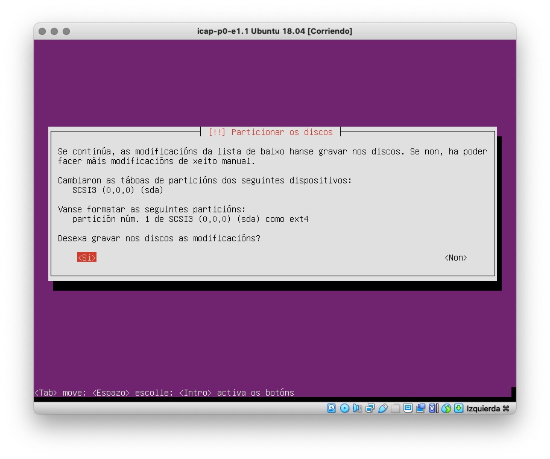
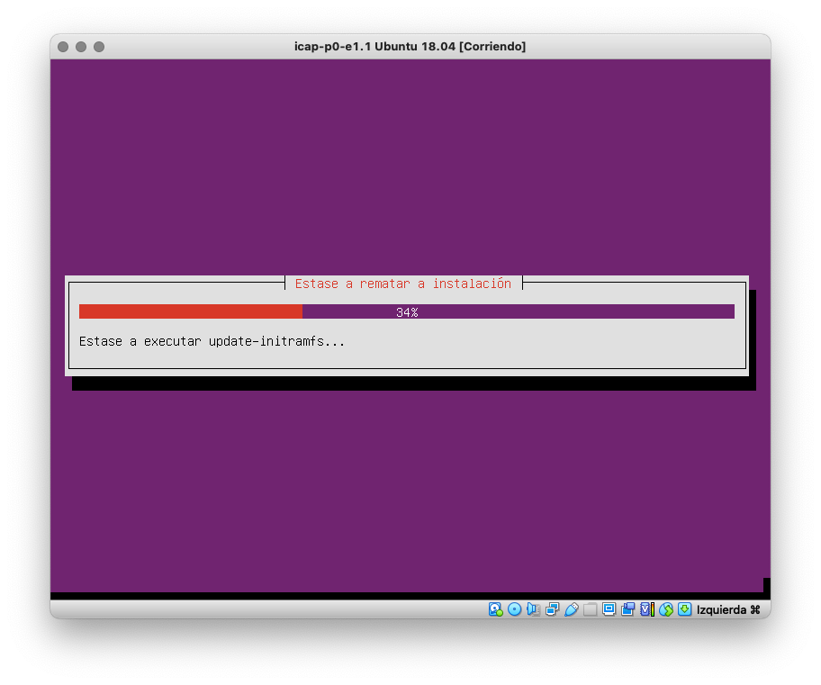

Instalación de Ubuntu 18.04 Server minimal nunha VM de VirtualBox
A seguinte secuencia de capturas mostra a instalación de Ubuntu 18.04 Server minimal coas opcións que hai que seleccionar en cada paso.
- Descarga desde aquí a imaxe ISO da versión MinimalCD do Ubuntu Server 18.04.
- Renomea a imaxe ISO descargada como ubuntu-18_04-mini.iso
OLLO en Windows: non fagas dobre click no arquivo descargado.
Se o fixeches, Windows montou a imaxe ISO como un CD virtual. Para poder renomeala tes que escoller a opción Expulsar no menú de contexto do arquivo.
- Inicia a VM que creaches no VirtualBox e selecciona a imaxe ISO descargada como disco de arranque. Se che dera problemas accedendo á imaxe ISO, podes probar a apagar a VM, montar a imaxe ISO "manualmente" nas opcións de almacenamento da VM, como se indica na captura, e iniciar de novo a VM.

- Se a VM se iniciou correctamente aparecerá o menú inicial do instalador de Ubuntu. Escolle a opción Install.
- Escolle o idioma.
- Escolle a localización.
- Configura o teclado. Podes aceptar que se detecte automaticamente ou non aceptar e configuralo manualmente. Se o configuras manualmente, podes deixar a disposición por defecto ou escoller a que máis se asemelle ao teclado que teñas.

- Se non hai ningún erro, a configuración da rede debería facerse automaticamente. Só é necesario que configures o nome que terá a VM na rede. Como VirtualBox conecta a VM a Internet a través dunha NAT, non vai ser visíbel fora do teu computador, polo que podes por o nome que queiras.
- Escolle a réplica que se usará para descargar Ubuntu.
- Se accedes a Internet a través dun proxy, introduce a información para a conexión ao proxy. Se non, deixao en branco.
- Realízase a carga das compoñentes adicionais. Paciencia. Isto pode levar un rato.
- Configura a conta de usuario que usarás para abrir sesión na VM.
- Se é doado adiviñar o contrasinal, o instalador faracho saber. Como é unha conta que usaremos só para probas podes deixalo así.
- Realízase a configuración do reloxo.
- Escolle o fuso horario de Madrid.
- Seguen a cargarse máis compoñentes adicionais. Paciencia.
- Configuración do disco. Vamos escoller a opción máis simple que consiste nun modo guiado que usa o disco completo. O instalador encargarase de todo automaticamente.
- Acepta particionar o disco e formatar a partición.

- Comeza a instalación do sistema. Paciencia. Este é o paso da instalación que require máis tempo.
- Escolle a opción sen actualizacións automáticas. Como a VM vamos usala só para probas, así evitamos que as actualizacións interfiran e consuman recursos que poden facer que a VM vaia moi lenta.
- A instalación continúa. Paciencia.
- Escolle instalar as coleccións de software indicadas na captura: Ubuntu desktop, OpenSSH Server e Basic Ubuntu server.
OLLO que para escoller opcións hai que usar a BARRA ESPACIADORA e non a tecla RETURN
- Realízase a instalación do software escollido. Paciencia. Isto tamén vai levar un cacho.
- Acepta instalar GRUB, o cargador que xestiona o arranque do SO desde o disco ríxido.
- Escolle SI para indicar que o reloxo do sistema utiliza a hora UTC.
- Instálase o que falta. Xa estamos rematando.

- Rematou a instalación. Antes de aceptar para continuar, extrae o CD de instalación (a imaxe ISO de Ubuntu) desde VirtualBox, na configuración do almacenamento da VM.